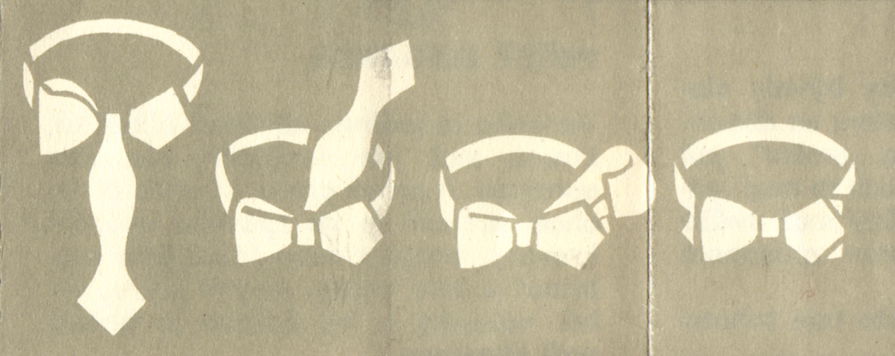
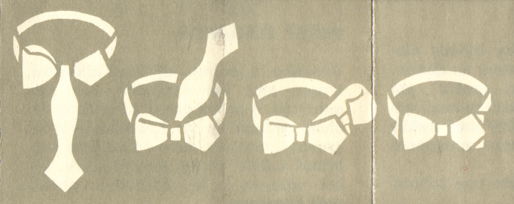

Vázání kravat
Vázání kravat
Také si při těch nemnohých příležitostech, kdy je třeba dojít
v obleku, marně vzpomínáte na postup, jak se váže kravata? Já kravatové
uzly vážu ne častěji než jednou za rok, a proto si návod, jak uvázat
kravatu, dávám sem.
Převzato z návodu „Hedva – pečeť elegance“. Snad mi soudruzi
odpustí :-)
Od kdy nosí muži vázanku?
V roce 1660 přišel do Francie pluk Chorvatů, kteří k uniformě nosili kolem krku šátek uvázaný na konci na uzel. Důstojníci měli šátky hedvábné nebo mušelínové. Francouzům se to líbilo a nový módní doplněk dostal jméno po svých původcích. Francouzsky se Chorvat řekne Croate, což si franština upravila na cravate – a kravata vkročila do světa módy.
Dnešní podoba vázanky se ustálila v 19. století. Od poloviny 19. století se z mužského oblečení vytrácela barevnost látek a pestrost vzorů, jen vázanka si je zachovala. Jistě proto, že na vázance může vždycky muž projevit svůj vkus, zůstala právě vázanka dodnes pečetí jeho elegance.
Kravata moderního muže
Moderní muž nosí s oblibou polyesterové kravaty pro jejich praktické přednosti. Polyesterová kravate je velmi odolná proti otěru, nemačká se, drží tvar a snadno se ošetřuje.
Kravata z Hedvy
Hedva je tradičním výrobcem vázanek. Herva je zárukou kvality materiálu. Hedva připravuje pro každou sezónu novou kolekci vázanek módních barev, vzorů a střihů. ;-)
Uzel Manhattan
Používá se u kravat užších fazón nebo z lehkých materiálů, jako je pravé hedvábí, potištěný foulard apod. Nosí se k dennímu oblečení. Tento uzel se hodí nejlépe do košile s tuhým límcem s krátkými špičkami.
Kravatový uzel Long
Je to uzel historický, který dnes přišel optě do módy. Váže se u kravat těžších materiálů nebo u kravat širších fazón. Má být volnější, příliš se neutahuje. Nejlépe se vyjímá v límci s delšími špíčkami.
Uzel Windsor
Je značně objemný. Má pravidelný trojúhelníkový tvar. Ladí s košilí s široce rozevřenými krátkými špičkami límce.
Vázací motýlek Butterfly
 
Může se nosit ke košilovému límci jakéhokoliv tvaru. Působí svěže ve dne a slavnostně při večerní společenské události. Výzání vyžaduje trochu zručnosti a ta vám přece nechybí.
Vázací čtyřrohý šátek
Je velkou módou. V košili s rozhaleným límcem působí nenucenou elegancí. Nosí se velmi příjemně, protože umožňuje volnost pohybu, nesmí se však vázat příliš pevně.
Vytiskla Severografia, n. p., Ústí nad Labem